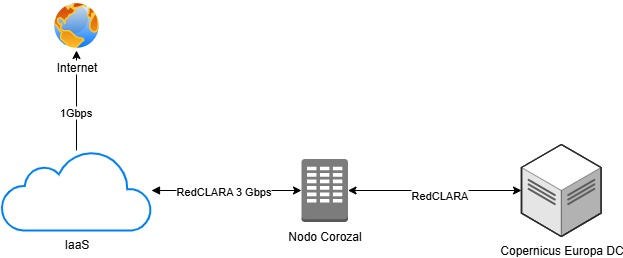

Conectividad – Enlace Internacional de Datos RedCLARA
Enlace internacional de datos vía RedCLARA, con lo que debe incluir la propuesta técnica y económica.
Para ello, deberá incluir dentro de su propuesta técnica y económica:
- El costo del enlace internacional a través de RedCLARA, incluyendo el tramo entre Europa y el nodo local (Panamá).
- La membresía anual de RedCLARA, que habilita el uso de dicha red para la transmisión segura y eficiente de grandes volúmenes de datos científicos y satelitales.
- Enlace de última milla 3 Gbps
| Descripción | Costo |
| Membresía | € 87,667.00 |
| Telecomunicaciones | € 56,500.00 |
| Enlace 3Gbps Local | € 34.560.00 |
| Total | €178.727.00 |
Tasa de referencia: €1 = B/. 1.17
El costo total aproximado es de B/.208,513.09, y de ser utilizada esta opción deberá ser asumido por el proveedor como parte integral del servicio ofrecido.
El contrato se hará entre RedCLARA y AIG, la administración, y reportes lo debe hacer el proveedor directamente con RedCLARA copiando a la AIG / Panamá.
Todos los reportes operativos requeridos, incluyendo fallas, mantenimientos, y estadísticas de uso, debe ser copiando formalmente a la AIG (Panamá) en toda comunicación relevante, para efectos de trazabilidad y supervisión del servicio.

Opción 2